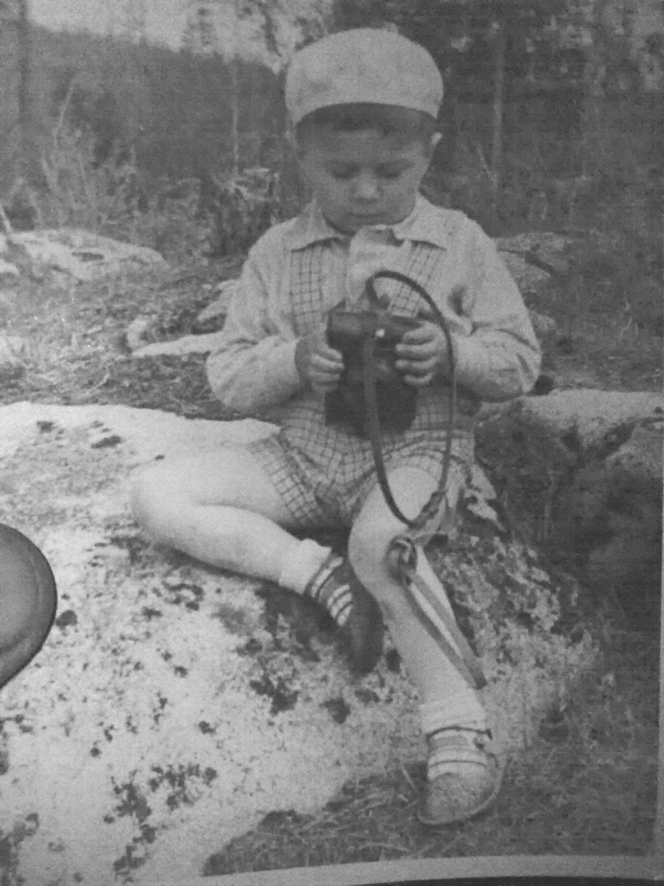
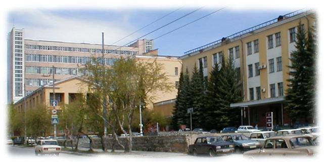

Врать и выдумывать всяческую белиберду я начал в раннем детстве. Лучшей игрой с детства и до сих пор считаю игру в карты "верю–не верю" на полной колоде в 56 листов, с двумя джокерами. И без сброса одинаковых четырёх карт.
Во дворе, а потом и в школе, вместо ответа на вопрос начинал плести чёрте-чо, за что у учителей математики и физики был почти в любимчиках, а училки русского, истории и всяких никому не понятных химий и биологий боялись меня спрашивать до судорог. Стоило мне на таких уроках открыть рот, как училка, опережая собственный визг "Замолчиии!!!", улепётывала в учительскую.
В институте что-то меня немного успокоило, пока на лекции по "Научному коммунизму", когда препод заявил: "Съездом КПСС установлено, что научно-техническая база коммунизма построена", я, к тому времени начитавшийся всяческой декадентщины, с заднего ряда прокомментировал: "Осталось товары завезти!". Но таки экзамен по научному коммунизму спихнуть мне свезло.
Попав на работу на сверхсекретный завод ВПК, очутился там в лаборатории АСУ. Да ещё и в лаборатории системного проектирования, постановщиком задач.
Надо сказать, инженер-постановщик - это тот самый человек, который объясняет куче программистов что, и, главное, как, от них требуется, и, в конце-концов, сделать так, чтобы заказчики, а это от кладовщиц, бухгалтеров и мелких клерков, до главного бухгалтера и генерального директора огроменного завода, были довольны. Но, с другой стороны, в обязанности постановщика входит и то, чтобы объяснить всем, чуть ранее перечисленным представителям заказчиков, что им нужно, да ещё так объяснять, чтобы они не только этого захотели, но и стали потом требовать от тебя самого, со всей твоей командой программистов, технарей и кучей прочих специалистов, то, что ты им навязал.
Также, надо заметить, что ни один заказчик не только не знает чего он хочет, но и со страшной силой упирается когда ему доказываешь, что тобой предлагаемое, это именно то, чего ему необходимо. Booбще-то рассказываемое заказчику чем-то напоминает встречу О.И.Бендера c шахматистами города Васюки...
Так вот, в результате таких переговоров, иной раз длящихся до полугода, приходилось исписывать тонны бумаги. Затем, уже в процессе разработки новых технологий управления, снова приходилось изводить те же тонны бумаги на всяческие задания программистам и прочим; а завершалась вся эта "опупея" снова тоннами исписанной бумаги на инструкции, госты, осты и прочую канцелярщину.
В результате любой нормальный человек должен был бы спятить, или, как минимум, возненавидеть писанину до глубин души, а я тока разохотился.